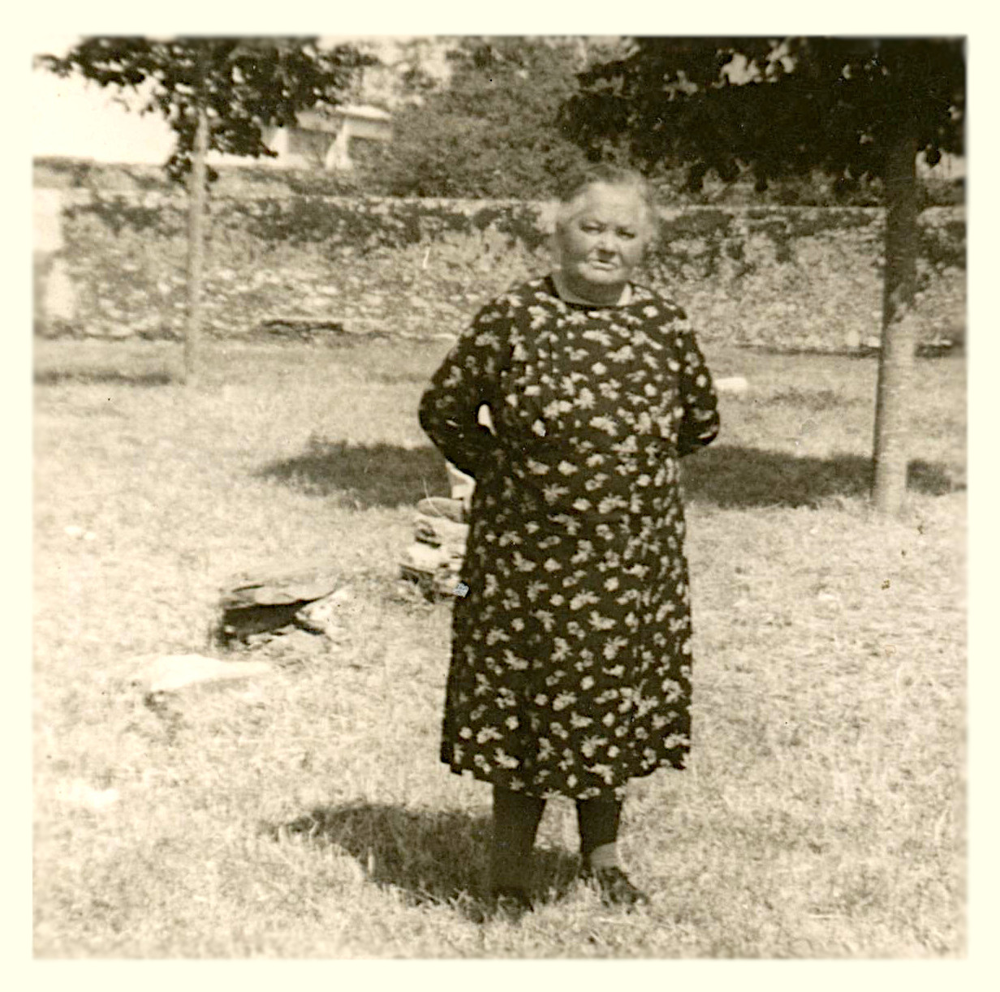
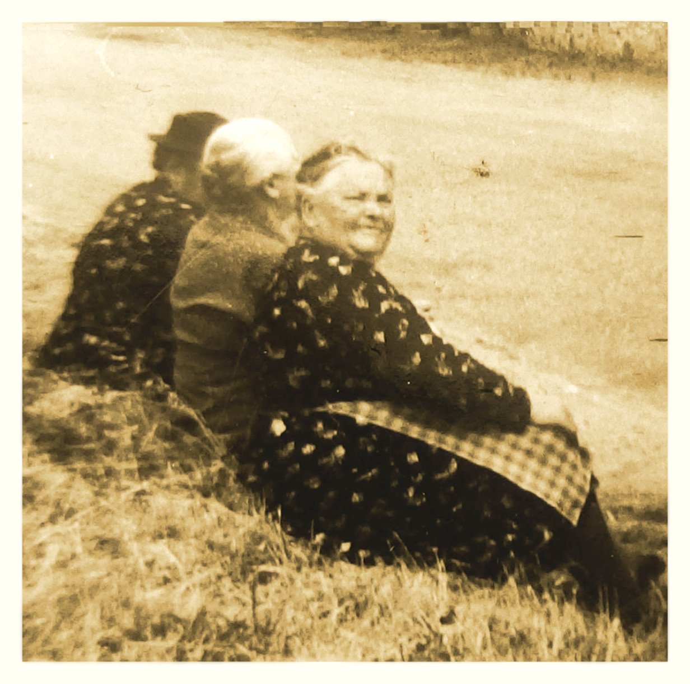
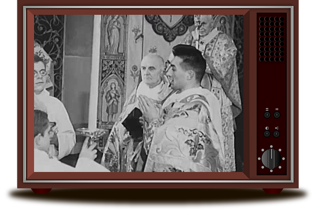
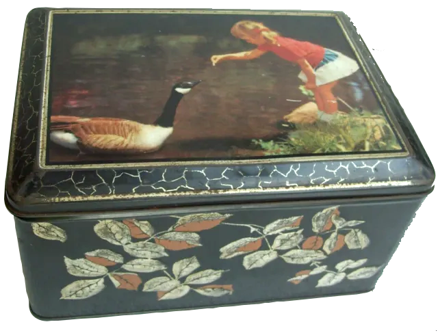

Bienvenue chez nos aïeux Henri et Clémentine
Samedi 23 mai 1914
Henri et Clémentine
s'unissaient en mariage dans l'église Saint Vital de Saint Viaud (Loire-Inf.)
Henri vers l'année 1945
Agé d'environ 55 ans
Clementine vers l'année 1945
Agée d'environ 55 ans
Henri Pierre EDELIN-CHAUVET
(1889-1978)
Henri en 1969 (81 ans)
Clémentine Marie GOISLARD-GAUBICHER
(1888-1975)
Clémentine en 1969 (81 ans)
Clémentine est née le 26 septembre 1888, au 10 rue de la Paix à Saint-Nazaire (Loire-Inférieure). Son père, Pierre Charles, est forgeron, et sa mère, Clémentine Constance Gaubicher, est journalière. Les parents de Clémentine se sont mariés à Nantes, où ils ont vécu avant de s'installer à Saint-Nazaire. Les aïeux de son père, Pierre Charles, sont originaires des environs de Saumur (Maine-et-Loire). Les aïeux de sa mère, Clémentine Constance, sont nantais avec des origines dans les Côtes-d’Armor, l’Indre-et-Loire et la Bourgogne (Côte-d'Or), par un grenadier au 93ᵉ régiment d’infanterie de l’armée républicaine(anciennement regiment d'Enghien), arrivé à Nantes en 1794 pendant les guerres de Vendée. Selon les actes d'état civil, les métiers exercés par ses aïeux sont divers : chamoiseur, forgeron, gardien d'aliénés, jardinier, journalier, ménagère, laboureur, marchand, ouvrier, huilier, pêcheur (en eau douce de la Loire), raffineur (ouvrier), revendeuse, serrurier, soldat (grenadier), tisserand, voiturier et volailler.
Clémentine a eu deux frères aînés, nés et décédés avant sa propre naissance : Charles Théophile (1881-1881, 7 jours) Charles Pierre Louis (1885-1886, 7 mois). Sa mère décède le 1ᵉʳ octobre 1893 à l’âge de 33 ans, alors que Clémentine vient tout juste d’avoir 5 ans. Son père se remarie le 1ᵉʳ décembre 1894 avec Jeanne Marie Denigot. De cette union naissent Charles François Clément Goislard, le 10 septembre 1895, et Marie Anne Goislard, le 13 février 1897. Malheureusement, le mois précédant la naissance de Marie Anne, leur père meurt à l’âge de 38 ans, le 16 janvier 1897. Clémentine est alors âgée de 8 ans. Elle se retrouve orpheline aux côtés de sa belle-mère, de son petit frère d’un an et de sa petite sœur nourrisson.
Très tôt après le décès de son père, Clémentine part en orphelinat catholique, où elle reçoit une éducation scolaire et religieuse qui l’influencera toute sa vie. Son petit frère Charles et sa petite sœur Marie décèdent en 1904, à l’âge respectif de 8 ans et 7 ans. Clémentine devient alors la seule survivante de sa fratrie.
Lorsqu’elle doit quitter l’orphelinat, vers l’âge de 12 ans probablement, elle est placée comme « servante de ferme » dans une métairie du Pays de Retz. Par la suite, elle devient « domestique » au 50, rue du Haut-Paimbœuf, au sein de la famille Louër de la Caffinière. Plus tard, elle rencontre Henri, avec qui elle se marie en l’église de Saint-Vital à Saint-Viaud, le 23 mai 1914. Clémentine a alors 25 ans.
on aperçoit
le sourire farceur de Clémentine
Clémentine etait très pieuse et très active au sein de la paroisse catholique de Paimbœuf. Pendant de nombreuses années, elle a été chaisière à l’église Saint-Louis et se chargeait aussi de la quête à la fin du service religieux. À l’occasion de ses noces d’or, le chanoine Aubert, curé archiprêtre de Paimbœuf, lui a remis la croix de Sainte-Claire pour son dévouement au service de l’Église.
Clémentine décédera le 8 novembre 1973 à Paimboeuf à l’âge de 85 ans, son mari Henri lui survivra 4 ans.
Les Sapeurs-Pompiers de Paimboeuf
Nous avons peu de documents concernant son engagement bénévole en tant que sapeur-pompier à la caserne de Paimbœuf. Nous disposons seulement d’une photo et d’une coupure de presse, toutes deux réalisées lors de commémorations de la Sainte-Barbe, patronne des pompiers. D’après les registres des pompiers de Paimbœuf, Henri s’est engagé le 1ᵉʳ avril 1920 pour cinq ans, puis a renouvelé son engagement en 1925 pour une nouvelle période de cinq ans. Il a appartenu pendant 25 ans à la compagnie de Paimbœuf. On peut supposer que son certificat de capacité à la conduite des véhicules militaires l’a amené à piloter les camions d’intervention. Durant la Seconde Guerre mondiale, il était mobilisé à la caserne de Paimbœuf.
Henri(88ans) vétéran moustachu à droite tenant sa canne
 La Pelouse 
Souvent, lors des beaux après-midis d’été, Clémentine pratiquait sa passion du crochet sur la « Pelouse », en face de chez elle. Ce lieu était particulièrement agréable : un beau terrain surélevé, engazonné et arboré. Les enfants profitaient aussi pleinement de cet espace pour jouer librement avec les grillons, les sauterelles, les coccinelles et autres insectes intrigants. Tout autour, il y avait aussi quelques allées et venues qui distrayaient les adultes et alimentaient leurs conversations. Clémentine était accompagnée, au gré des moments, de quelques voisines et membres de sa famille qui s’adonnaient, elles aussi, au maniement de l’aiguille. Le tricot, le raccommodage des vêtements et le canevas tissé faisaient partie des activités les plus fréquentes. Certaines apportaient également un livre, un journal ou un roman-photo pour varier leurs occupations. Toutes ces dames s’installaient à l’ombre d’un vieux mur mitoyen, chacune ayant apporté sa chaise pour plus de confort. La quiétude régnait, faisant de ce lieu un cadre propice au papotage
La Messe Dominicale 
À la fin de sa vie, Clémentine se déplaçait difficilement. Elle suivait donc la messe à la télévision chaque dimanche matin, prenant soin d’augmenter le volume pour continuer à entendre le service religieux même lorsqu’elle se rendait dans sa cuisine. Parfois, la fenêtre de sa pièce de vie était entrouverte sur la rue Pronzat, permettant ainsi aux rares passants du moment de profiter, eux aussi, des bonnes paroles du prêtre officiant sur l’écran cathodique.
La Boite à Berlingot 
L’un des plaisirs de Clémentine, lorsqu’elle entendait des enfants jouer dans la rue Pronzat, était d’ouvrir sa fenêtre donnant sur cette rue, puis de secouer bruyamment sa boîte métallique pleine de bonbons. Alertés par le bruit, les enfants interrompaient aussitôt leurs jeux et accouraient, tels une volée de moineaux, vers la fameuse boîte pour y prélever une sucrerie tant espérée. À cet instant, la joie de Clémentine était immense : son petit manège avait, une fois de plus, parfaitement fonctionné.
Souvenirs d'enfants
Henri est né le 27 juillet 1889 à Saint-Viaud (Loire-Inférieure). Ses parents, Jean Marie Edelin et Marie Chauvet, sont laboureurs. Tous les aïeux d’Henri, en remontant jusqu’au début du XVIIᵉ siècle, sont originaires exclusivement du Pays de Retz (Saint-Viaud, Le Clion, Saint-Père-en-Retz, Frossay, Saint-Brevin, etc.). Ses ascendants sont presque tous laboureurs, à l’exception d’un tisserand. Henri a 2 frères et 3 sœurs : Jean Marie, Alexandre, Marie, Constance et Jeanne. En 1896, Marie et Constance meurent en bas âge, respectivement à l’âge de 4 ans et 2 ans. Son père, Jean Marie, décède l’année suivante, en février 1897, à l’âge de 35 ans. Henri a alors 7 ans.
Henri apprend à lire et écrire mais très vite il devient valet de ferme, notamment chez Lucien Garnier. A l’âge de la conscription en 1910, Il est exempté par le conseil de réforme de l'armé pour "faiblesse générale". Il reprend donc son activité de laboureur.
Il épouse Clémentine le 23 mai 1914 à la mairie de Corsept (Loire-Inférieure), puis devant le Seigneur en l’église Saint-Vital de Saint-Viaud le même jour. À la déclaration de la Première Guerre mondiale, son frère Alexandre part au front. Alexandre est affecté au 137ᵉ régiment d’infanterie et meurt, à l’âge de 23 ans, le 6 septembre 1914 à Fère-Champenoise (dans le village de Normée) pendant la Première bataille de la Marne. En 1915, Henri est rappelé à l’activité dans le 147ᵉ régiment d’infanterie. Mais, étant atteint d’une pleurésie grave, il est maintenu réformé provisoire. En 1916, il est à nouveau rappelé dans le 147ᵉ, puis transféré dans le 11ᵉ escadron du train pour servir en tant que chauffeur de troupe. Le 23 mars 1917, son frère Jean-Marie meurt d’une tuberculose longue de plusieurs années à Saint-Viaud, à l’âge de 28 ans. Sa mère, Marie Chauvet, meurt le mois suivant, le 23 avril 1917, à l’âge de 57 ans. Le 28 décembre 1918, Henri perd sa sœur Jeanne, qui meurt à l’hôpital de Paimboeuf à l’âge de 21 ans.
En ce tout début d’année 1919, Henri est orphelin de père et de mère et seul survivant de sa fratrie. La période de l’entre-deux-guerres lui permettra de fonder avec Clémentine une famille de six enfants. Il travaille d'abord aux Ateliers de construction métalliques de Paimboeuf (ACP), puis comme employé dans l’usine Kuhlmann (chimie) de Paimboeuf à partir du 27 juillet 1922. Il obtiendra la médaille d'honneur du travail le 15 octobre 1950 apres plus de 28 ans de fidelité à l'entreprise. Henri servira également comme pompier volontaire assidu dans cette même commune de Paimboeuf.
Henri s’éteindra à Paimboeuf le 15 mars 1978 à l’âge de 88 ans.